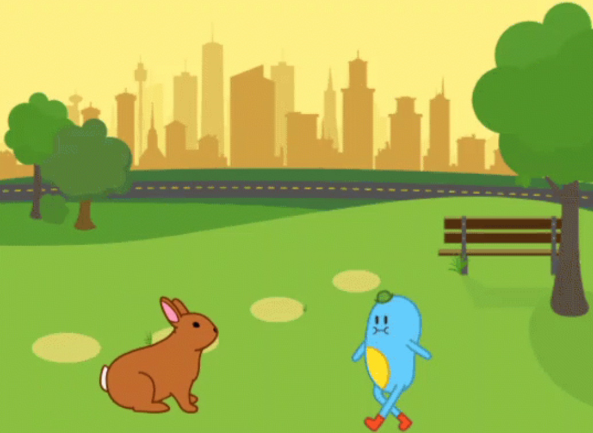

Move & Code
Pasif ekran süresi
Günümüzde çocukların ekranla geçirdiği süre artmaktadır. Ancak bu sürenin büyük bölümü pasif içerik tüketimi (video izleme, tek yönlü oyunlar) şeklinde gerçekleşir.
Pasif ekran kullanımı; hareketi azaltabilir, sosyal etkileşimi sınırlayabilir ve çocuğu üretici bir rolden çok tüketici konumuna yerleştirebilir.
Sorun ekranın kendisi değil; ekranın nasıl kullanıldığıdır. Bu nedenle ihtiyaç duyulan şey, ekranı tamamen yasaklamak değil; ekran deneyimini aktif, üretici ve fiziksel katılım içeren bir öğrenme sürecine dönüştürmektir.
Kodla → Hareket Et → Tekrarla
Her sahne 20–30 saniyelik kodlama/oyun parçasıdır ve ardından çocuk ekrandan uzaklaşıp fiziksel hareket eder. Böylece ekran süresi bölünür ve öğrenme pekişir.
Robot Gibi Hareket Et
Sıralama ve Motor Becerileri
- 3 adım ileri
- Sağa dön
- Zıpla
Dans Algoritması
Örüntü ve Ritim
- Zıpla
- Dön
- Alkışla
Hataları Bulalım
Hata bulma ve Problem Çözme.
- Robot yanlış gidiyor
- Blokları düzelt
- Tekrar dene
3 adımda kullanım
Kazanımlar
- Sıralama / Algoritmik düşünme
- Sebep–Sonuç İlişkisi Kurma
- Basit Hata Bulma
- Motor Becerileri
- Sağlıklı Ekran Alışkanlığı
Örnek ekran görüntüleri
Buraya ScratchJr sahnelerinden 4 görsel koyulacak.
